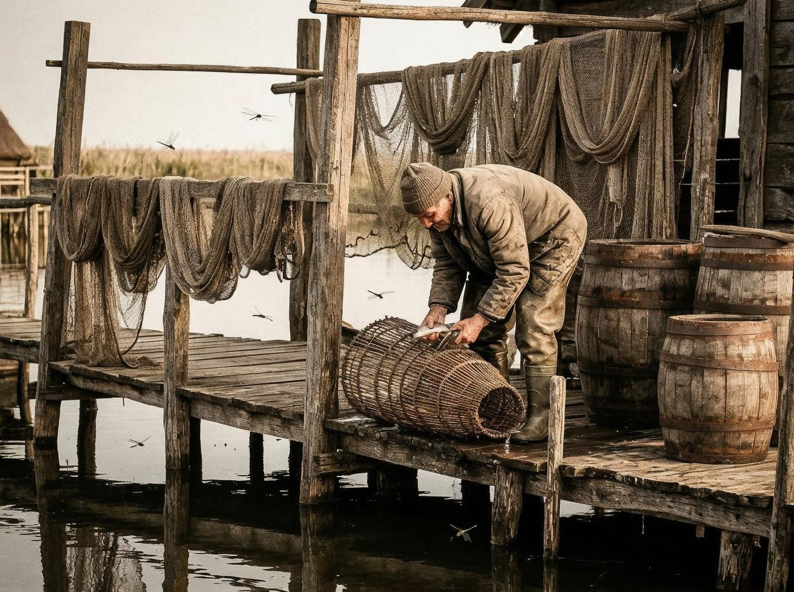
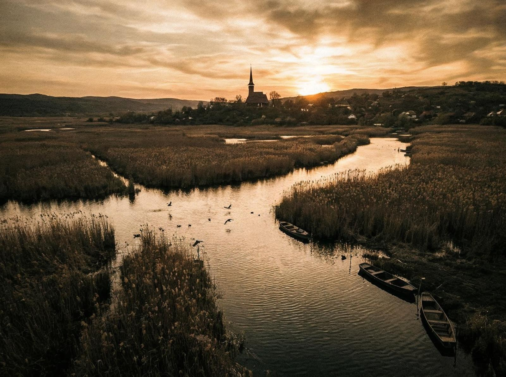

Coordonatele îmi sunt notate în agendă: 46° 45′ 24″ N 24° 05′ 36″ E. Sic. Un sat în județul Cluj, dar locul e mai mult decât un sat. E o rezervație. E o deltă. E o minime.
Puțini știu că la Sic se găsește o rezervație de stufăriș ce reprezintă o mică deltă. Supranumită "Delta Transilvaniei", rezervația de la Sic este a doua cea mai mare întindere de stuf din România, după Delta Dunării. 505 hectare de stuf compact pe Valea Coastei și Valea Sicului.
Interesant e că stufărișul de la Sic e nu doar mare. E plin de viață. E casă pentru numeroase păsări și alte animale. E loc de cuibărit sau hibernare pentru specii care ar fi avut probleme să găsească altundeva. Adăpostește în jur de 100 de specii.

Și iată ce e fascinant: rezervația e situată între dealuri. Nu e într-un loc unde te aștepți să găsești o deltă. E în Transilvania, lângă un sat care e renumit pentru dansuri, dar și pentru minele de sare. Dar stufărișul e acolo, ascuns, așteptând să fie descoperit.
Problema e că Sic nu e în ghidurile turistice. Nu e în reclamele de promovare. E acolo, liniștit, înconjurat de dealuri, protejând mii de vieți. Puțini știu de el. Puțini merg să-l vadă.
Și totuși există. E acolo, în județul Cluj, așteptând să fie redescoperit. Oamenii vin, admiră, pleacă. Se întorc. Admiră din nou. E un ciclu care continuă, chiar dacă nu e massiv.

Nu facem mitologie. Doar observăm. Stufărișul are nevoie de protecție. Speciile au nevoie de habitat. România are nevoie să învețe că bogăția nu e doar în ce construim, ci și în ce păstrăm.
Există locuri care nu apar pe harta turistică — locuri protejate, ecosisteme uitate, natură nevalorificată. Sic e una din ele.
Probabil că nu putem să ne întoarcem la același nivel. Dar putem învăța. Putem învăța că natura nu e doar decor. E viață. E identitate. Și că, uneori, cele mai importante lucruri sunt cele pe care le-am uitat.
Sic e o amintire. O amintire a ceea ce am protejat, ceea ce am păstrat, ceea ce am oferit naturii. Și o amintire a ceea ce putem fi, dacă învățăm din trecut.